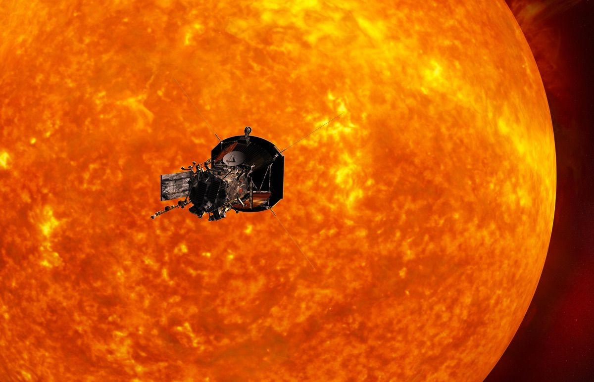
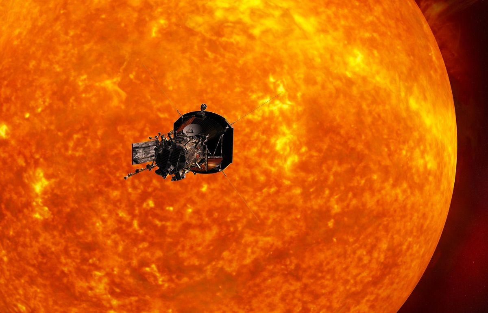

The Pink Crystal
As you fly through space, you start to feel positive about all of crystals you've found and look forward to finding the last one. It starts to get really hot and finally realize the spaceship is slowly getting closer to the sun. You put the spaceship in an immediate stop, maybe its best to go past it? or should you explore the sun a bit more?
 

What would be best?